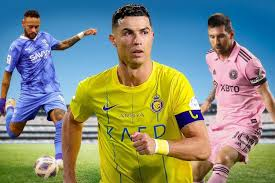

Senado atende pedido de Romário e cria 'CPI das Apostas Esportivas' para investigar manipulação de resultados

O futebol foi incluído pela primeira vez no programa Olímpico nos Jogos da II Olimpíada (Paris 1900) e tem sido disputado em todas as edições desde então, com exceção dos Jogos de Los Angeles, em 1932 (em uma tentativa de promover a recém-criada Copa do Mundo masculina da FIFA).